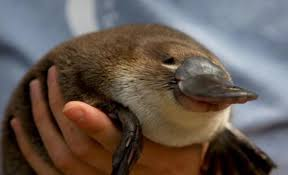

Missão, Visão e Valores
Preservar o ornitorrinco e seu habitat por meio de ações sociais e ambientais.
Histórico e Conquistas
Mais de 10 mil voluntários engajados desde 2015.
Equipe
Conheça os profissionais e voluntários que fazem tudo acontecer.